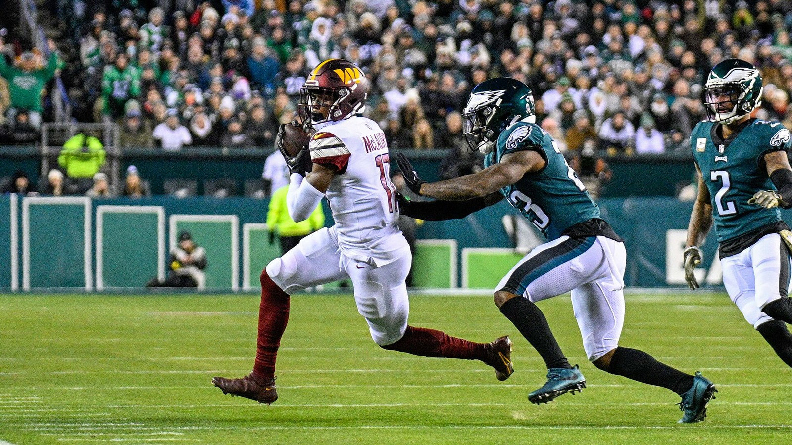

Buffalo Bills release C.J. Gardner-Johnson one day after his suspension ended
One day after C.J. Gardner-Johnson's one-game suspension ended, the Bills released their starting safety instead of bringing him back. The reported reason wasn't the spitting incident — it was the tape.

The Buffalo Bills announced Tuesday that they are releasing safety C.J. Gardner-Johnson — one day after his one-game suspension ended, and six days before the biggest game of their season. Gardner-Johnson became eligible to return to the roster on Monday. Instead of a return, he got a release.
It is a stunning end to a short stay. Buffalo signed Gardner-Johnson to a one-year deal in March, and he started all six games he played alongside Cole Bishop, finishing with 26 tackles, two passes defended and one interception. Two weeks ago, head coach Joe Brady stood in front of reporters and defended him — "C.J.'s a member of the Buffalo Bills. We brought him here for a reason." On Tuesday, the Bills decided the reason had run out.
The unraveling started in the Week 6 win over the Raiders, when Gardner-Johnson was ejected before halftime for spitting toward tight end Brock Bowers. The NFL suspended him one game without pay. He appealed, the suspension was upheld, and he sat out Sunday's 36-10 win over Baltimore — a week that also brought an additional $11,194 fine for unnecessary roughness in the Raiders game.
If you are assuming the spitting got him cut, the reporting says otherwise. Per NFL Network's Cameron Wolfe, the release was driven by Gardner-Johnson's inconsistency in play — too many snaps that left the staff wondering what he was doing. The numbers back it up: after two strong outings to open the season, quarterbacks posted passer ratings of 92.4, 126.6 and 118.7 throwing his way in the three weeks before the bye, per figures cited by Sporting News. The edge he brought was real. So was the volatility.
And then there is the timing Buffalo cannot ignore: this defense just played its best game of the season without him. Against Baltimore, the Bills allowed 144 total yards, held Derrick Henry to 53 rushing yards, kept Zay Flowers without a single catch and forced three turnovers — with Damar Hamlin stepping back into the lineup and Te'Cory Couch earning praise from Brady after the game. The front office watched that film and chose the room it had over the name it signed.
Couch, signed to the active roster on Oct. 31 with the roster spot the suspension opened, keeps his place on the 53. Hamlin is in line to start next to Bishop on Monday night, with Sam Franklin Jr. and rookie Jalon Kilgore behind them and Geno Stone on the practice squad. The first test could not be much bigger: Monday Night Football in Minnesota, 6-1 against 6-1.
Gardner-Johnson is 28, a Super Bowl champion, and now heads to waivers looking for his eighth stop — a career that has never lacked for talent or headlines. Somebody will call; starting-caliber safeties are scarce in November. But Buffalo, holding the AFC's best record, just told you what it values more: eleven guys playing the same defense over one guy playing his own. Was it the right call? Tell us below — and get the full breakdown in your inbox every morning with The BNC Blitz.
The BNC Blitz is free: the day's Bills news, one stat that matters, and one take, every morning. Join to keep reading — and never miss the end of a story again.